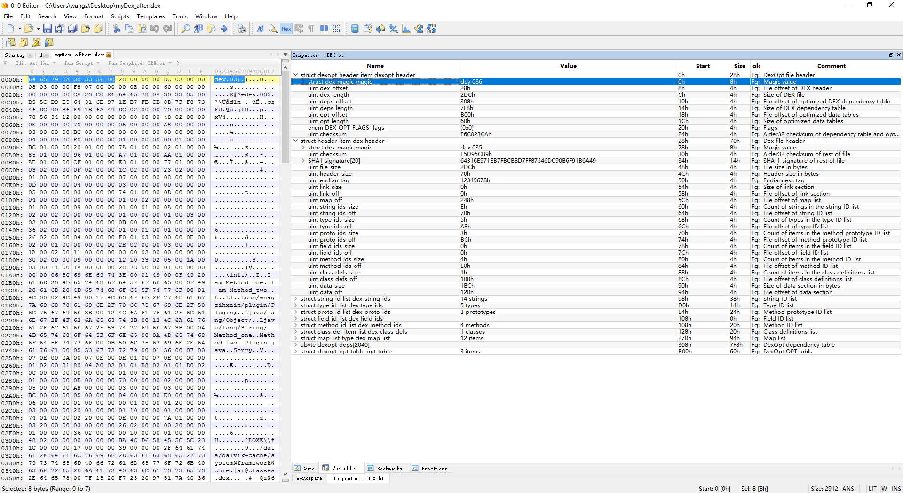
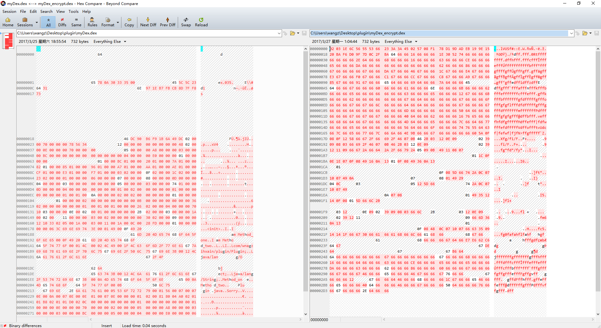

Author：wnagzihxain
Mail：tudouboom@163.com
动态加载的一点点小总结，正常情况下度娘上搜到的都是一个套路
dx命令生成一个优化后的Jar文件我写点不一样的，看着也新鲜一点
首先是制作一个Dex，然后里面写几个简单的方法用于调用测试
package com.wnagzihxain.plugin;
/**
* Created by wnagzihxain on 2017/3/25 0025.
*/
public class Plugin {
public String Method_one() {
return "I am Method_one";
}
public String Method_two(int num) {
return num == 1 ? "I am Method_two" : "Sorry";
}
}
这里就两个实例方法，模拟一下无参数和有参数的情况
将com\wnagzihxain\plugin\Plugin.java这个路径的com文件夹拷贝到D:\Android\sdk\build-tools\25.0.1\下
这里有dx.bat，然后执行命令，JDK1.7以及1.8编译后使用dx命令会出现错误，这里使用1.6，但不需要切换JDK版本，我JDK是1.8版本
javac -source 1.6 -target 1.6 com\wnagzihxain\plugin\Plugin.java
执行后，在D:\Android\sdk\build-tools\25.0.1\com\wnagzihxain\plugin\目录下出现Plugin.class文件
执行dx命令
dx --dex --output=com\wnagzihxain\plugin\myDex.dex com\wnagzihxain\plugin\Plugin.class
同目录生成myDex.dex文件
使用JEB查看生成的Dex文件，很干净，没有其余v4和v7这种支持包，这点很重要
然后这个Dex放边上待用，来写一下动态加载的代码
假设从sdcard进行读取Dex文件，优化后存放在/data/data/com.wnagzihxain.dexclassloaderdemo/files里面
DexClassLoader的构造函数
DexClassLoader(String dexPath, String optimizedDirectory, String libraryPath, ClassLoader parent)
解释一下四个参数
前三个参数的获取，获取完后Log输出用于调试
ApplicationInfo applicationInfo = this.getApplicationInfo();
String dexPath = "/sdcard/myDex.dex";
String dexOutputDir = getApplicationContext().getFilesDir().getAbsolutePath();
String libPath = applicationInfo.nativeLibraryDir;
Log.i(TAG, "dexPath :" + dexPath);
Log.i(TAG, "dexOutputdir : " + dexOutputDir);
Log.i(TAG, "libPath : " + libPath);
创建DexClassLoader实例，loadClass()方法一定要捕获异常，然后获取待加载类实例，依次调用两个方法
DexClassLoader dexClassLoader = new DexClassLoader(dexPath, dexOutputDir, libPath, this.getClass().getClassLoader());
try {
Class<?> clazz = dexClassLoader.loadClass("com.wnagzihxain.plugin.Plugin");
Object object = clazz.newInstance();
//Method_one
Method method_one = clazz.getMethod("Method_one");
String method_one_result = (String)method_one.invoke(object);
Log.i(TAG, "Call Method_one : " + method_one_result);
//Method_two
Class[] method_two_param = new Class[1];
method_two_param[0] = Integer.TYPE;
Method method_two = clazz.getMethod("Method_two", method_two_param);
String method_two_result = (String)method_two.invoke(object, 1);
Log.i(TAG, "Call Method_two : " + method_two_result);
} catch (Exception e) {
e.printStackTrace();
}
完整的代码
package com.wnagzihxain.dexclassloaderdemo;
import android.content.pm.ApplicationInfo;
import android.support.v7.app.AppCompatActivity;
import android.os.Bundle;
import android.util.Log;
import java.lang.reflect.Method;
import dalvik.system.DexClassLoader;
public class DexClassLoaderActivity extends AppCompatActivity {
String TAG = "toT0C";
@Override
protected void onCreate(Bundle savedInstanceState) {
super.onCreate(savedInstanceState);
setContentView(R.layout.activity_main);
ApplicationInfo applicationInfo = this.getApplicationInfo();
String dexPath = "/sdcard/myDex.dex";
String dexOutputDir = getApplicationContext().getFilesDir().getAbsolutePath();
String libPath = applicationInfo.nativeLibraryDir;
Log.i(TAG, "dexPath :" + dexPath);
Log.i(TAG, "dexOutputDir : " + dexOutputDir);
Log.i(TAG, "libPath : " + libPath);
DexClassLoader dexClassLoader = new DexClassLoader(dexPath, dexOutputDir, libPath, this.getClass().getClassLoader());
try {
Class<?> clazz = dexClassLoader.loadClass("com.wnagzihxain.plugin.Plugin");
Object object = clazz.newInstance();
//Method_one
Method method_one = clazz.getMethod("Method_one");
String method_one_result = (String)method_one.invoke(object);
Log.i(TAG, "Call Method_one : " + method_one_result);
//Method_two
Class[] method_two_param = new Class[1];
method_two_param[0] = Integer.TYPE;
Method method_two = clazz.getMethod("Method_two", method_two_param);
String method_two_result = (String)method_two.invoke(object, 1);
Log.i(TAG, "Call Method_two : " + method_two_result);
} catch (Exception e) {
e.printStackTrace();
}
}
}
最后添加权限
<uses-permission android:name="android.permission.WRITE_EXTERNAL_STORAGE" />
<uses-permission android:name="android.permission.READ_EXTERNAL_STORAGE" />
<uses-permission android:name="android.permission.MOUNT_UNMOUNT_FILESYSTEMS"/>
先把MyDex.dex放到sdcard
C:\Users\wangz\Desktop>adb push myDex.dex /sdcard/
[100%] /sdcard/myDex.dex
安装运行我们写的加载应用
日志输出
04-08 11:27:37.811 23011-23011/com.wnagzihxain.dexclassloaderdemo I/toT0C: dexPath :/sdcard/myDex.dex
04-08 11:27:37.811 23011-23011/com.wnagzihxain.dexclassloaderdemo I/toT0C: dexOutputDir : /data/data/com.wnagzihxain.dexclassloaderdemo/files
04-08 11:27:37.811 23011-23011/com.wnagzihxain.dexclassloaderdemo I/toT0C: libPath : /data/app-lib/com.wnagzihxain.dexclassloaderdemo-5
04-08 11:27:37.811 23011-23011/com.wnagzihxain.dexclassloaderdemo I/toT0C: Call Method_one : I am Method_one
04-08 11:27:37.811 23011-23011/com.wnagzihxain.dexclassloaderdemo I/toT0C: Call Method_two : I am Method_two
跟我们的预期是一致的
刚才那个优化后的路径，我们跳过去看一下
C:\Users\wangz\Desktop>adb shell
root@jflte:/ # cd data/data/com.wnagzihxain.dexclassloaderdemo/files
root@jflte:/data/data/com.wnagzihxain.dexclassloaderdemo/files # ls
myDex.dex
拷贝回计算机本地
C:\Users\wangz\Desktop>adb pull /data/data/com.wnagzihxain.dexclassloaderdemo/files/myDex.dex C:\Users\wangz\Desktop\
[100%] /data/data/com.wnagzihxain.dexclassloaderdemo/files/myDex.dex
使用JEB已经打不开，提示无效Dex文件
使用010Editor分析，从Magic Number可以看出来，这是个ODex文件，这个属于安装APK流程里面的知识了，以后再讲

假设从自身应用文件夹读取Dex文件，优化后存放在/data/data/com.wnagzihxain.dexclassloaderdemo/files/里面
早期，不对，早早早早早早早期的加固思想，就跟这个场景有点像，把真实的Dex文件放到自身assets文件夹下，然后动态加载起来，后面再替换原程序Application对象之类的
这里我们只讨论动态加载的过程
首先将assets的Dex文件读出来，放到sdcard中，为了比较符合场景，我们现在sdcard创建一个以自身应用包名为名字的文件夹，然后将Dex写进去
public void releaseDexFile() {
try {
InputStream inputStream = context.getAssets().open("myDex.dex", MODE_PRIVATE);
String packageName = applicationInfo.packageName;
//Create saved_Dex file directory first else we would got a "open failed: ENOENT (No such file or directory)" exception
File dexfilePath_save = new File("/sdcard/" + packageName);
if (!dexfilePath_save.exists()) {
dexfilePath_save.mkdir();
}
File dexFile_save = new File("/sdcard/" + packageName + "/myDex.dex");
FileOutputStream fileOutputStream = new FileOutputStream(dexFile_save);
int myDexlength = inputStream.available();
byte[] buffer_temp = new byte[myDexlength];
inputStream.read(buffer_temp);
fileOutputStream.write(buffer_temp);
fileOutputStream.flush();
inputStream.close();
fileOutputStream.close();
} catch (Exception e) {
e.printStackTrace();
Log.i(TAG, "Releasing myDex.dex failed\n" + e);
}
}
然后对写入的Dex做一次检测，判断是否真的存在
//Check the copy function executing successfully
File dexFile = new File(dexPath);
if (!dexFile.exists()) {
Log.i(TAG, "Top miss, Mid miss, Bot miss, All miss");
return;
}
加载完成后，删除sdcard里的Dex文件和应用文件夹下优化后的ODex文件
//Delete the dex file we copy
dexFile.delete();
//Delete the odex
File odexFile = new File(dexOutputDir + "myDex.dex");
odexFile.delete();
最终的代码
package com.wnagzihxain.dexclassloaderdemo;
import android.content.Context;
import android.content.pm.ApplicationInfo;
import android.support.v7.app.AppCompatActivity;
import android.os.Bundle;
import android.util.Log;
import java.io.File;
import java.io.FileOutputStream;
import java.io.InputStream;
import java.lang.reflect.Method;
import dalvik.system.DexClassLoader;
public class DexClassLoaderActivity extends AppCompatActivity {
Context context = DexClassLoaderActivity.this;
String TAG = "toT0C";
ApplicationInfo applicationInfo = null;
@Override
protected void onCreate(Bundle savedInstanceState) {
super.onCreate(savedInstanceState);
setContentView(R.layout.activity_main);
applicationInfo = DexClassLoaderActivity.this.getApplicationInfo();
//Copy myDex.dex from assets/myDex.dex to /sdcard/com.wnagzihxain.dexclassloaderdemo/myDex.dex
releaseDexFile();
String dexPath = "/sdcard/" + applicationInfo.packageName + "/myDex.dex";
String dexOutputDir = getApplicationContext().getFilesDir().getAbsolutePath();
String libPath = applicationInfo.nativeLibraryDir;
Log.i(TAG, "dexPath :" + dexPath);
Log.i(TAG, "dexOutputDir : " + dexOutputDir);
Log.i(TAG, "libPath : " + libPath);
//Check the copy function executing successfully
File dexFile = new File(dexPath);
if (!dexFile.exists()) {
Log.i(TAG, "Top miss, Mid miss, Bot miss, All miss");
return;
}
DexClassLoader dexClassLoader = new DexClassLoader(dexPath, dexOutputDir, libPath, this.getClass().getClassLoader());
//Delete the dex file we copy
dexFile.delete();
//Delete the odex
File odexFile = new File(dexOutputDir + "myDex.dex");
odexFile.delete();
try {
Class<?> clazz = dexClassLoader.loadClass("com.wnagzihxain.plugin.Plugin");
Object object = clazz.newInstance();
//Method_one
Method method_one = clazz.getMethod("Method_one");
String method_one_result = (String)method_one.invoke(object);
Log.i(TAG, "Call Method_one : " + method_one_result);
//Method_two
Class[] method_two_param = new Class[1];
method_two_param[0] = Integer.TYPE;
Method method_two = clazz.getMethod("Method_two", method_two_param);
String method_two_result = (String)method_two.invoke(object, 1);
Log.i(TAG, "Call Method_two : " + method_two_result);
} catch (Exception e) {
e.printStackTrace();
}
}
public void releaseDexFile() {
try {
InputStream inputStream = context.getAssets().open("myDex.dex", MODE_PRIVATE);
String packageName = applicationInfo.packageName;
//Create saved_Dex file directory first else we would got a "open failed: ENOENT (No such file or directory)" exception
File dexfilePath_save = new File("/sdcard/" + packageName);
if (!dexfilePath_save.exists()) {
dexfilePath_save.mkdir();
}
File dexFile_save = new File("/sdcard/" + packageName + "/myDex.dex");
FileOutputStream fileOutputStream = new FileOutputStream(dexFile_save);
int myDexlength = inputStream.available();
byte[] buffer_temp = new byte[myDexlength];
inputStream.read(buffer_temp);
fileOutputStream.write(buffer_temp);
fileOutputStream.flush();
inputStream.close();
fileOutputStream.close();
} catch (Exception e) {
e.printStackTrace();
Log.i(TAG, "Releasing myDex.dex failed\n" + e);
}
}
}
运行输出
04-09 09:48:07.840 25851-25851/com.wnagzihxain.dexclassloaderdemo I/toT0C: dexPath :/sdcard/com.wnagzihxain.dexclassloaderdemo/myDex.dex
04-09 09:48:07.840 25851-25851/com.wnagzihxain.dexclassloaderdemo I/toT0C: dexOutputDir : /data/data/com.wnagzihxain.dexclassloaderdemo/files
04-09 09:48:07.840 25851-25851/com.wnagzihxain.dexclassloaderdemo I/toT0C: libPath : /data/app-lib/com.wnagzihxain.dexclassloaderdemo-16
04-09 09:48:07.930 25851-25851/com.wnagzihxain.dexclassloaderdemo I/toT0C: Call Method_one : I am Method_one
04-09 09:48:07.930 25851-25851/com.wnagzihxain.dexclassloaderdemo I/toT0C: Call Method_two : I am Method_two
如果是创建新Dex文件过程中一直报如下错误，可以考虑我的代码，先创建路径，就不会报错了
open failed: ENOENT (No such file or directory)
假设从自身应用文件夹读取加密后的Dex文件，先解密，优化后存放在/data/data/com.wnagzihxain.dexclassloaderdemo/files里面
如同上面第二种场景，单纯的把原始Dex文件放到APK的assets里未免太草率了，怎么也得加密一下
比如最简单的一个异或
我们先使用IDEA来写一下测试代码
package com.wnagzihxain.plugin;
import java.io.File;
import java.io.FileInputStream;
import java.io.FileOutputStream;
/**
* Created by wnagzihxain on 2017/3/27 0027.
*/
public class EncryptDex {
String TAG = "toT0C";
static byte xor_key = 0x66; //Someone's name, I miss her so much though I know she will never see it .
public static void main(String[] argv) {
File dexFile = new File("myDex.dex");
FileInputStream fileInputStream = null;
try {
fileInputStream = new FileInputStream(dexFile);
int dexFilelength = fileInputStream.available();
byte[] buffer_temp = new byte[dexFilelength];
fileInputStream.read(buffer_temp);
for (int i = 0; i < dexFilelength; i++) {
buffer_temp[i] = (byte) (buffer_temp[i] ^ xor_key);
}
FileOutputStream fileOutputStream = new FileOutputStream(new File("myDex_encrypt.dex"));
fileOutputStream.write(buffer_temp);
fileInputStream.close();
fileOutputStream.close();
} catch (Exception e) {
e.printStackTrace();
}
}
}
运行后在同目录下生成myDex_encrypt.dex文件
使用Beyond Compare进行十六进制对比

修改代码，将输入文件改为myDex_encrypt.dex，输出文件改为myDex_decrypt.dex
运行后生成myDex_decrypt.dex，再次使用Beyond Compare对比

异或真是好用
现在修改应用的源码，主要是修改异或那一段，然后再修改一下文件名便于编程
public void releaseDexFile() {
byte xor_key = 0x66;
try {
InputStream inputStream = context.getAssets().open("myDex_encrypt.dex", MODE_PRIVATE);
String packageName = applicationInfo.packageName;
//Create saved_Dex file directory first else we would got a "open failed: ENOENT (No such file or directory)" exception
File dexfilePath_save = new File("/sdcard/" + packageName);
if (!dexfilePath_save.exists()) {
dexfilePath_save.mkdir();
}
File dexFile_save = new File("/sdcard/" + packageName + "/myDex_decrypt.dex");
FileOutputStream fileOutputStream = new FileOutputStream(dexFile_save);
int myDexlength = inputStream.available();
byte[] buffer_temp = new byte[myDexlength];
inputStream.read(buffer_temp);
for (int i = 0; i < myDexlength; i++) {
buffer_temp[i] = (byte) (buffer_temp[i] ^ xor_key);
}
fileOutputStream.write(buffer_temp);
fileOutputStream.flush();
inputStream.close();
fileOutputStream.close();
} catch (Exception e) {
e.printStackTrace();
Log.i(TAG, "Releasing myDex.dex failed\n" + e);
}
}
前面操作的文件名也需要做一下修改，完整的代码
package com.wnagzihxain.dexclassloaderdemo;
import android.content.Context;
import android.content.pm.ApplicationInfo;
import android.support.v7.app.AppCompatActivity;
import android.os.Bundle;
import android.util.Log;
import java.io.File;
import java.io.FileOutputStream;
import java.io.InputStream;
import java.lang.reflect.Method;
import dalvik.system.DexClassLoader;
public class DexClassLoaderActivity extends AppCompatActivity {
Context context = DexClassLoaderActivity.this;
String TAG = "toT0C";
ApplicationInfo applicationInfo = null;
@Override
protected void onCreate(Bundle savedInstanceState) {
super.onCreate(savedInstanceState);
setContentView(R.layout.activity_main);
applicationInfo = DexClassLoaderActivity.this.getApplicationInfo();
//Copy myDex.dex from assets/myDex.dex to /sdcard/com.wnagzihxain.dexclassloaderdemo/myDex.dex
releaseDexFile();
String dexPath = "/sdcard/" + applicationInfo.packageName + "/myDex_decrypt.dex";
String dexOutputDir = getApplicationContext().getFilesDir().getAbsolutePath();
String libPath = applicationInfo.nativeLibraryDir;
Log.i(TAG, "dexPath :" + dexPath);
Log.i(TAG, "dexOutputDir : " + dexOutputDir);
Log.i(TAG, "libPath : " + libPath);
//Check the copy function executing successfully
File dexFile = new File(dexPath);
if (!dexFile.exists()) {
Log.i(TAG, "Top miss, Mid miss, Bot miss, All miss");
return;
}
DexClassLoader dexClassLoader = new DexClassLoader(dexPath, dexOutputDir, libPath, this.getClass().getClassLoader());
//Delete the dex file we copy
dexFile.delete();
//Delete the odex
File odexFile = new File(dexOutputDir + "myDex_decrypt.dex");
odexFile.delete();
try {
Class<?> clazz = dexClassLoader.loadClass("com.wnagzihxain.plugin.Plugin");
Object object = clazz.newInstance();
//Method_one
Method method_one = clazz.getMethod("Method_one");
String method_one_result = (String)method_one.invoke(object);
Log.i(TAG, "Call Method_one : " + method_one_result);
//Method_two
Class[] method_two_param = new Class[1];
method_two_param[0] = Integer.TYPE;
Method method_two = clazz.getMethod("Method_two", method_two_param);
String method_two_result = (String)method_two.invoke(object, 1);
Log.i(TAG, "Call Method_two : " + method_two_result);
} catch (Exception e) {
e.printStackTrace();
}
}
public void releaseDexFile() {
byte xor_key = 0x66;
try {
InputStream inputStream = context.getAssets().open("myDex_encrypt.dex", MODE_PRIVATE);
String packageName = applicationInfo.packageName;
//Create saved_Dex file directory first else we would got a "open failed: ENOENT (No such file or directory)" exception
File dexfilePath_save = new File("/sdcard/" + packageName);
if (!dexfilePath_save.exists()) {
dexfilePath_save.mkdir();
}
File dexFile_save = new File("/sdcard/" + packageName + "/myDex_decrypt.dex");
FileOutputStream fileOutputStream = new FileOutputStream(dexFile_save);
int myDexlength = inputStream.available();
byte[] buffer_temp = new byte[myDexlength];
inputStream.read(buffer_temp);
for (int i = 0; i < myDexlength; i++) {
buffer_temp[i] = (byte) (buffer_temp[i] ^ xor_key);
}
fileOutputStream.write(buffer_temp);
fileOutputStream.flush();
inputStream.close();
fileOutputStream.close();
} catch (Exception e) {
e.printStackTrace();
Log.i(TAG, "Releasing myDex.dex failed\n" + e);
}
}
}
运行输出
04-09 23:25:10.673 27851-27851/com.wnagzihxain.dexclassloaderdemo I/toT0C: dexPath :/sdcard/com.wnagzihxain.dexclassloaderdemo/myDex_decrypt.dex
04-09 23:25:10.673 27851-27851/com.wnagzihxain.dexclassloaderdemo I/toT0C: dexOutputDir : /data/data/com.wnagzihxain.dexclassloaderdemo/files
04-09 23:25:10.673 27851-27851/com.wnagzihxain.dexclassloaderdemo I/toT0C: libPath : /data/app-lib/com.wnagzihxain.dexclassloaderdemo-18
04-09 23:25:10.763 27851-27851/com.wnagzihxain.dexclassloaderdemo I/toT0C: Call Method_one : I am Method_one
04-09 23:25:10.763 27851-27851/com.wnagzihxain.dexclassloaderdemo I/toT0C: Call Method_two : I am Method_two
不要直接用同样的环境生成两个APK，会出现加载两次的错误，可能有时显示的并不是加载两次之类的错误，但是深层次的分析会发现就是加载了两次
不要直接使用JDK1.7以及1.8去编译Java文件，编译虽然能成功但是使用dx命令的时候会各种问题
优化后的Dex或者说ODex文件不要释放到sdcard，如果释放到外面，会报错，注意最后几句错误提示
java.lang.RuntimeException: Unable to start activity ComponentInfo{com.wnagzihxain.dexclassloaderdemo/com.wnagzihxain.dexclassloaderdemo.MainActivity}: java.lang.IllegalArgumentException: Optimized data directory /sdcard/com.wnagzihxain.dexclassloaderdemo/Dex is not owned by the current user. Shared storage cannot protect your application from code injection attacks.
我爱4.4
最开始的定义，对几个参数做了简单的介绍，着重提醒优化后的ODex文件要放在应用私有文件夹下
/*
* Copyright (C) 2008 The Android Open Source Project
*
* Licensed under the Apache License, Version 2.0 (the "License");
* you may not use this file except in compliance with the License.
* You may obtain a copy of the License at
*
* http://www.apache.org/licenses/LICENSE-2.0
*
* Unless required by applicable law or agreed to in writing, software
* distributed under the License is distributed on an "AS IS" BASIS,
* WITHOUT WARRANTIES OR CONDITIONS OF ANY KIND, either express or implied.
* See the License for the specific language governing permissions and
* limitations under the License.
*/
package dalvik.system;
import java.io.File;
/**
* A class loader that loads classes from {@code .jar} and {@code .apk} files
* containing a {@code classes.dex} entry. This can be used to execute code not
* installed as part of an application.
*
* <p>This class loader requires an application-private, writable directory to
* cache optimized classes. Use {@code Context.getDir(String, int)} to create
* such a directory: <pre> {@code
* File dexOutputDir = context.getDir("dex", 0);
* }</pre>
*
* <p><strong>Do not cache optimized classes on external storage.</strong>
* External storage does not provide access controls necessary to protect your
* application from code injection attacks.
*/
public class DexClassLoader extends BaseDexClassLoader {
/**
* Creates a {@code DexClassLoader} that finds interpreted and native
* code. Interpreted classes are found in a set of DEX files contained
* in Jar or APK files.
*
* <p>The path lists are separated using the character specified by the
* {@code path.separator} system property, which defaults to {@code :}.
*
* @param dexPath the list of jar/apk files containing classes and
* resources, delimited by {@code File.pathSeparator}, which
* defaults to {@code ":"} on Android
* @param optimizedDirectory directory where optimized dex files
* should be written; must not be {@code null}
* @param libraryPath the list of directories containing native
* libraries, delimited by {@code File.pathSeparator}; may be
* {@code null}
* @param parent the parent class loader
*/
public DexClassLoader(String dexPath, String optimizedDirectory,
String libraryPath, ClassLoader parent) {
super(dexPath, new File(optimizedDirectory), libraryPath, parent);
}
}
父类BaseDexClassLoader的构造函数
/**
* Constructs an instance.
*
* @param dexPath the list of jar/apk files containing classes and
* resources, delimited by {@code File.pathSeparator}, which
* defaults to {@code ":"} on Android
* @param optimizedDirectory directory where optimized dex files
* should be written; may be {@code null}
* @param libraryPath the list of directories containing native
* libraries, delimited by {@code File.pathSeparator}; may be
* {@code null}
* @param parent the parent class loader
*/
public BaseDexClassLoader(String dexPath, File optimizedDirectory,
String libraryPath, ClassLoader parent) {
super(parent);
this.pathList = new DexPathList(this, dexPath, libraryPath, optimizedDirectory);
}
BaseDexClassLoader父类ClassLoader的构造方法，判断了一下是否为空，只做了parent变量的赋值
/**
* Constructs a new instance of this class with the system class loader as
* its parent.
*/
protected ClassLoader() {
this(getSystemClassLoader(), false);
}
/**
* Constructs a new instance of this class with the specified class loader
* as its parent.
*
* @param parentLoader
* The {@code ClassLoader} to use as the new class loader's
* parent.
*/
protected ClassLoader(ClassLoader parentLoader) {
this(parentLoader, false);
}
/*
* constructor for the BootClassLoader which needs parent to be null.
*/
ClassLoader(ClassLoader parentLoader, boolean nullAllowed) {
if (parentLoader == null && !nullAllowed) {
throw new NullPointerException("parentLoader == null && !nullAllowed");
}
parent = parentLoader;
}
再回到BaseDexClassLoader，new了一个DexPathList对象
DexPathList类的构造方法
/**
* Constructs an instance.
*
* @param definingContext the context in which any as-yet unresolved
* classes should be defined
* @param dexPath list of dex/resource path elements, separated by
* {@code File.pathSeparator}
* @param libraryPath list of native library directory path elements,
* separated by {@code File.pathSeparator}
* @param optimizedDirectory directory where optimized {@code .dex} files
* should be found and written to, or {@code null} to use the default
* system directory for same
*/
public DexPathList(ClassLoader definingContext, String dexPath,
String libraryPath, File optimizedDirectory) {
if (definingContext == null) {
throw new NullPointerException("definingContext == null");
}
if (dexPath == null) {
throw new NullPointerException("dexPath == null");
}
if (optimizedDirectory != null) {
if (!optimizedDirectory.exists()) {
throw new IllegalArgumentException(
"optimizedDirectory doesn't exist: "
+ optimizedDirectory);
}
if (!(optimizedDirectory.canRead()
&& optimizedDirectory.canWrite())) {
throw new IllegalArgumentException(
"optimizedDirectory not readable/writable: "
+ optimizedDirectory);
}
}
this.definingContext = definingContext;
ArrayList<IOException> suppressedExceptions = new ArrayList<IOException>();
this.dexElements = makeDexElements(splitDexPath(dexPath), optimizedDirectory,
suppressedExceptions);
if (suppressedExceptions.size() > 0) {
this.dexElementsSuppressedExceptions =
suppressedExceptions.toArray(new IOException[suppressedExceptions.size()]);
} else {
dexElementsSuppressedExceptions = null;
}
this.nativeLibraryDirectories = splitLibraryPath(libraryPath);
}
前面都是一些对象是否为空，路径是否可读可写之类的判断，下面才是重点
this.definingContext = definingContext;
ArrayList<IOException> suppressedExceptions = new ArrayList<IOException>();
this.dexElements = makeDexElements(splitDexPath(dexPath), optimizedDirectory,
suppressedExceptions);
if (suppressedExceptions.size() > 0) {
this.dexElementsSuppressedExceptions =
suppressedExceptions.toArray(new IOException[suppressedExceptions.size()]);
} else {
dexElementsSuppressedExceptions = null;
}
this.nativeLibraryDirectories = splitLibraryPath(libraryPath);
在创建了一个IOException类型的ArrayList后，调用makeDexElements()
this.dexElements = makeDexElements(splitDexPath(dexPath), optimizedDirectory,
suppressedExceptions);
第一个参数splitDexPath(dexPath)
/**
* Splits the given dex path string into elements using the path
* separator, pruning out any elements that do not refer to existing
* and readable files. (That is, directories are not included in the
* result.)
*/
private static ArrayList<File> splitDexPath(String path) {
return splitPaths(path, null, false);
}
跳到splitPaths()
/**
* Splits the given path strings into file elements using the path
* separator, combining the results and filtering out elements
* that don't exist, aren't readable, or aren't either a regular
* file or a directory (as specified). Either string may be empty
* or {@code null}, in which case it is ignored. If both strings
* are empty or {@code null}, or all elements get pruned out, then
* this returns a zero-element list.
*/
private static ArrayList<File> splitPaths(String path1, String path2,
boolean wantDirectories) {
ArrayList<File> result = new ArrayList<File>();
splitAndAdd(path1, wantDirectories, result);
splitAndAdd(path2, wantDirectories, result);
return result;
}
再跳到splitAndAdd()，此处需要结合一开始的DexClassLoader类的注释参数说明，由于我们要加载的Dex或者APK可能有多个，中间用:分割，结合成一个字符串形式传入，在这里进行分割，返回File ArrayList对象
/**
* Helper for {@link #splitPaths}, which does the actual splitting
* and filtering and adding to a result.
*/
private static void splitAndAdd(String searchPath, boolean directoriesOnly,
ArrayList<File> resultList) {
if (searchPath == null) {
return;
}
for (String path : searchPath.split(":")) {
try {
StructStat sb = Libcore.os.stat(path);
if (!directoriesOnly || S_ISDIR(sb.st_mode)) {
resultList.add(new File(path));
}
} catch (ErrnoException ignored) {
}
}
}
在调用makeDexElements()时传入的第一个参数就是需要加载的File ArrayList
进入函数后会进行遍历，判断传入的文件后缀，如果是Dex文件，直接调用loadDexFile()，如果后缀是APK，JAR，ZIP这三个，则
/**
* Makes an array of dex/resource path elements, one per element of
* the given array.
*/
private static Element[] makeDexElements(ArrayList<File> files, File optimizedDirectory,
ArrayList<IOException> suppressedExceptions) {
ArrayList<Element> elements = new ArrayList<Element>();
/*
* Open all files and load the (direct or contained) dex files
* up front.
*/
for (File file : files) {
File zip = null;
DexFile dex = null;
String name = file.getName();
if (name.endsWith(DEX_SUFFIX)) {
// Raw dex file (not inside a zip/jar).
try {
dex = loadDexFile(file, optimizedDirectory);
} catch (IOException ex) {
System.logE("Unable to load dex file: " + file, ex);
}
} else if (name.endsWith(APK_SUFFIX) || name.endsWith(JAR_SUFFIX)
|| name.endsWith(ZIP_SUFFIX)) {
zip = file;
try {
dex = loadDexFile(file, optimizedDirectory);
} catch (IOException suppressed) {
/*
* IOException might get thrown "legitimately" by the DexFile constructor if the
* zip file turns out to be resource-only (that is, no classes.dex file in it).
* Let dex == null and hang on to the exception to add to the tea-leaves for
* when findClass returns null.
*/
suppressedExceptions.add(suppressed);
}
} else if (file.isDirectory()) {
// We support directories for looking up resources.
// This is only useful for running libcore tests.
elements.add(new Element(file, true, null, null));
} else {
System.logW("Unknown file type for: " + file);
}
if ((zip != null) || (dex != null)) {
elements.add(new Element(file, false, zip, dex));
}
}
return elements.toArray(new Element[elements.size()]);
}
后面就不管了，上面可以分析出无论是什么后缀的文件，都会调用loadDexFile()，如果优化后的ODex文件存储路径为空，则new一个DexFile对象，如果有传入ODex文件的存储路径，则调用DexFile的loadDex()方法
/**
* Constructs a {@code DexFile} instance, as appropriate depending
* on whether {@code optimizedDirectory} is {@code null}.
*/
private static DexFile loadDexFile(File file, File optimizedDirectory)
throws IOException {
if (optimizedDirectory == null) {
return new DexFile(file);
} else {
String optimizedPath = optimizedPathFor(file, optimizedDirectory);
return DexFile.loadDex(file.getPath(), optimizedPath, 0);
}
}
在优化路径为空的情况下，但是我们动态加载是一定会传入一个路径的，所以这个在本文所讨论的范围内并不会发生
/**
* Opens a DEX file from a given File object. This will usually be a ZIP/JAR
* file with a "classes.dex" inside.
*
* The VM will generate the name of the corresponding file in
* /data/dalvik-cache and open it, possibly creating or updating
* it first if system permissions allow. Don't pass in the name of
* a file in /data/dalvik-cache, as the named file is expected to be
* in its original (pre-dexopt) state.
*
* @param file
* the File object referencing the actual DEX file
*
* @throws IOException
* if an I/O error occurs, such as the file not being found or
* access rights missing for opening it
*/
public DexFile(File file) throws IOException {
this(file.getPath());
}
当优化路径存在，先处理优化路径，判断是否以.dex结尾，最终是要形成一个具体的/xxx/xxx/classes.dex这样的文件路径
/**
* Converts a dex/jar file path and an output directory to an
* output file path for an associated optimized dex file.
*/
private static String optimizedPathFor(File path,
File optimizedDirectory) {
/*
* Get the filename component of the path, and replace the
* suffix with ".dex" if that's not already the suffix.
*
* We don't want to use ".odex", because the build system uses
* that for files that are paired with resource-only jar
* files. If the VM can assume that there's no classes.dex in
* the matching jar, it doesn't need to open the jar to check
* for updated dependencies, providing a slight performance
* boost at startup. The use of ".dex" here matches the use on
* files in /data/dalvik-cache.
*/
String fileName = path.getName();
if (!fileName.endsWith(DEX_SUFFIX)) {
int lastDot = fileName.lastIndexOf(".");
if (lastDot < 0) {
fileName += DEX_SUFFIX;
} else {
StringBuilder sb = new StringBuilder(lastDot + 4);
sb.append(fileName, 0, lastDot);
sb.append(DEX_SUFFIX);
fileName = sb.toString();
}
}
File result = new File(optimizedDirectory, fileName);
return result.getPath();
}
接着调用DexFile.loadDex()加载Dex
/**
* Open a DEX file, specifying the file in which the optimized DEX
* data should be written. If the optimized form exists and appears
* to be current, it will be used; if not, the VM will attempt to
* regenerate it.
*
* This is intended for use by applications that wish to download
* and execute DEX files outside the usual application installation
* mechanism. This function should not be called directly by an
* application; instead, use a class loader such as
* dalvik.system.DexClassLoader.
*
* @param sourcePathName
* Jar or APK file with "classes.dex". (May expand this to include
* "raw DEX" in the future.)
* @param outputPathName
* File that will hold the optimized form of the DEX data.
* @param flags
* Enable optional features. (Currently none defined.)
* @return
* A new or previously-opened DexFile.
* @throws IOException
* If unable to open the source or output file.
*/
static public DexFile loadDex(String sourcePathName, String outputPathName,
int flags) throws IOException {
/*
* TODO: we may want to cache previously-opened DexFile objects.
* The cache would be synchronized with close(). This would help
* us avoid mapping the same DEX more than once when an app
* decided to open it multiple times. In practice this may not
* be a real issue.
*/
return new DexFile(sourcePathName, outputPathName, flags);
}
注释提到第三个参数目前未定义，直接传进来的是0
在该函数里new了一个DexFile对象，先检测优化路径是否属于应用自身私有文件夹，在前面的测试中也有提到过这种情况，主要是安全性的问题，如果没有问题，调用openDexFile()
/**
* Opens a DEX file from a given filename, using a specified file
* to hold the optimized data.
*
* @param sourceName
* Jar or APK file with "classes.dex".
* @param outputName
* File that will hold the optimized form of the DEX data.
* @param flags
* Enable optional features.
*/
private DexFile(String sourceName, String outputName, int flags) throws IOException {
if (outputName != null) {
try {
String parent = new File(outputName).getParent();
if (Libcore.os.getuid() != Libcore.os.stat(parent).st_uid) {
throw new IllegalArgumentException("Optimized data directory " + parent
+ " is not owned by the current user. Shared storage cannot protect"
+ " your application from code injection attacks.");
}
} catch (ErrnoException ignored) {
// assume we'll fail with a more contextual error later
}
}
mCookie = openDexFile(sourceName, outputName, flags);
mFileName = sourceName;
guard.open("close");
//System.out.println("DEX FILE cookie is " + mCookie);
}
openDexFile()返回一个int型数据，赋值给变量mcookie，该变量的定义
private int mCookie;
跟到openDexFile()方法，间接调用openDexFileNative()方法
/*
* Open a DEX file. The value returned is a magic VM cookie. On
* failure, an IOException is thrown.
*/
private static int openDexFile(String sourceName, String outputName,
int flags) throws IOException {
return openDexFileNative(new File(sourceName).getCanonicalPath(),
(outputName == null) ? null : new File(outputName).getCanonicalPath(),
flags);
}
openDexFileNative()方法是一个native方法
native private static int openDexFileNative(String sourceName, String outputName,
int flags) throws IOException;
找到定义的cpp文件，首先是对应的gMethodTable
const DalvikNativeMethod dvm_dalvik_system_DexFile[] = {
{ "openDexFileNative", "(Ljava/lang/String;Ljava/lang/String;I)I",
Dalvik_dalvik_system_DexFile_openDexFileNative },
{ "openDexFile", "([B)I",
Dalvik_dalvik_system_DexFile_openDexFile_bytearray },
{ "closeDexFile", "(I)V",
Dalvik_dalvik_system_DexFile_closeDexFile },
{ "defineClassNative", "(Ljava/lang/String;Ljava/lang/ClassLoader;I)Ljava/lang/Class;",
Dalvik_dalvik_system_DexFile_defineClassNative },
{ "getClassNameList", "(I)[Ljava/lang/String;",
Dalvik_dalvik_system_DexFile_getClassNameList },
{ "isDexOptNeeded", "(Ljava/lang/String;)Z",
Dalvik_dalvik_system_DexFile_isDexOptNeeded },
{ NULL, NULL, NULL },
};
知道对应的符号关系后，跳到Dalvik_dalvik_system_DexFile_openDexFileNative()方法
/*
* private static int openDexFileNative(String sourceName, String outputName,
* int flags) throws IOException
*
* Open a DEX file, returning a pointer to our internal data structure.
*
* "sourceName" should point to the "source" jar or DEX file.
*
* If "outputName" is NULL, the DEX code will automatically find the
* "optimized" version in the cache directory, creating it if necessary.
* If it's non-NULL, the specified file will be used instead.
*
* TODO: at present we will happily open the same file more than once.
* To optimize this away we could search for existing entries in the hash
* table and refCount them. Requires atomic ops or adding "synchronized"
* to the non-native code that calls here.
*
* TODO: should be using "long" for a pointer.
*/
static void Dalvik_dalvik_system_DexFile_openDexFileNative(const u4* args,
JValue* pResult)
{
StringObject* sourceNameObj = (StringObject*) args[0];
StringObject* outputNameObj = (StringObject*) args[1];
DexOrJar* pDexOrJar = NULL;
JarFile* pJarFile;
RawDexFile* pRawDexFile;
char* sourceName;
char* outputName;
if (sourceNameObj == NULL) {
dvmThrowNullPointerException("sourceName == null");
RETURN_VOID();
}
sourceName = dvmCreateCstrFromString(sourceNameObj);
if (outputNameObj != NULL)
outputName = dvmCreateCstrFromString(outputNameObj);
else
outputName = NULL;
/*
* We have to deal with the possibility that somebody might try to
* open one of our bootstrap class DEX files. The set of dependencies
* will be different, and hence the results of optimization might be
* different, which means we'd actually need to have two versions of
* the optimized DEX: one that only knows about part of the boot class
* path, and one that knows about everything in it. The latter might
* optimize field/method accesses based on a class that appeared later
* in the class path.
*
* We can't let the user-defined class loader open it and start using
* the classes, since the optimized form of the code skips some of
* the method and field resolution that we would ordinarily do, and
* we'd have the wrong semantics.
*
* We have to reject attempts to manually open a DEX file from the boot
* class path. The easiest way to do this is by filename, which works
* out because variations in name (e.g. "/system/framework/./ext.jar")
* result in us hitting a different dalvik-cache entry. It's also fine
* if the caller specifies their own output file.
*/
if (dvmClassPathContains(gDvm.bootClassPath, sourceName)) {
ALOGW("Refusing to reopen boot DEX '%s'", sourceName);
dvmThrowIOException(
"Re-opening BOOTCLASSPATH DEX files is not allowed");
free(sourceName);
free(outputName);
RETURN_VOID();
}
/*
* Try to open it directly as a DEX if the name ends with ".dex".
* If that fails (or isn't tried in the first place), try it as a
* Zip with a "classes.dex" inside.
*/
if (hasDexExtension(sourceName)
&& dvmRawDexFileOpen(sourceName, outputName, &pRawDexFile, false) == 0) {
ALOGV("Opening DEX file '%s' (DEX)", sourceName);
pDexOrJar = (DexOrJar*) malloc(sizeof(DexOrJar));
pDexOrJar->isDex = true;
pDexOrJar->pRawDexFile = pRawDexFile;
pDexOrJar->pDexMemory = NULL;
} else if (dvmJarFileOpen(sourceName, outputName, &pJarFile, false) == 0) {
ALOGV("Opening DEX file '%s' (Jar)", sourceName);
pDexOrJar = (DexOrJar*) malloc(sizeof(DexOrJar));
pDexOrJar->isDex = false;
pDexOrJar->pJarFile = pJarFile;
pDexOrJar->pDexMemory = NULL;
} else {
ALOGV("Unable to open DEX file '%s'", sourceName);
dvmThrowIOException("unable to open DEX file");
}
if (pDexOrJar != NULL) {
pDexOrJar->fileName = sourceName;
addToDexFileTable(pDexOrJar);
} else {
free(sourceName);
}
free(outputName);
RETURN_PTR(pDexOrJar);
}
首先将传入的参数转换类型，转为StringObject*指针类型
StringObject* sourceNameObj = (StringObject*) args[0];
StringObject* outputNameObj = (StringObject*) args[1];
DexOrJar* pDexOrJar = NULL;
JarFile* pJarFile;
RawDexFile* pRawDexFile;
定义char*指针类型的两个字符串变量，下面判断加载的Dex路径字符串是否为空，为空抛个异常，然后返回空，如果该字符串不为空，转为C的char*类型的数据，优化后的ODex文件存储路径无论是否为空都不会返回，为空直接赋值为空，不为空转为C的char*类型
char* sourceName;
char* outputName;
if (sourceNameObj == NULL) {
dvmThrowNullPointerException("sourceName == null");
RETURN_VOID();
}
sourceName = dvmCreateCstrFromString(sourceNameObj);
if (outputNameObj != NULL)
outputName = dvmCreateCstrFromString(outputNameObj);
else
outputName = NULL;
在处理完参数的问题后，判断该Dex文件是否是系统的Dex也就是bootstrap class DEX files，如果是的话，就会拒绝，一个原因是加载的依赖集合会不同，由此造成的优化结果也不一样，然后balabala的，还有一个原因是会重复加载，因为这些都已经加载过了，总之就是要防止某些小兔崽子加载上面说的Dex文件，最后还说了句：最好开发者指定一个输出目录，也就是ODex文件的存储路径，存储路径参考前面的三个场景代码来设置
/*
* We have to deal with the possibility that somebody might try to
* open one of our bootstrap class DEX files. The set of dependencies
* will be different, and hence the results of optimization might be
* different, which means we'd actually need to have two versions of
* the optimized DEX: one that only knows about part of the boot class
* path, and one that knows about everything in it. The latter might
* optimize field/method accesses based on a class that appeared later
* in the class path.
*
* We can't let the user-defined class loader open it and start using
* the classes, since the optimized form of the code skips some of
* the method and field resolution that we would ordinarily do, and
* we'd have the wrong semantics.
*
* We have to reject attempts to manually open a DEX file from the boot
* class path. The easiest way to do this is by filename, which works
* out because variations in name (e.g. "/system/framework/./ext.jar")
* result in us hitting a different dalvik-cache entry. It's also fine
* if the caller specifies their own output file.
*/
if (dvmClassPathContains(gDvm.bootClassPath, sourceName)) {
ALOGW("Refusing to reopen boot DEX '%s'", sourceName);
dvmThrowIOException(
"Re-opening BOOTCLASSPATH DEX files is not allowed");
free(sourceName);
free(outputName);
RETURN_VOID();
}
在确认了待加载Dex文件的合法性后，进行类型的区分，第一个判断的是Dex文件，先判断是否是.dex后缀，如果是的话执行&&后面的代码，后面是打开Dex文件并且在后面进行一些结构体成员的赋值
/*
* Try to open it directly as a DEX if the name ends with ".dex".
* If that fails (or isn't tried in the first place), try it as a
* Zip with a "classes.dex" inside.
*/
if (hasDexExtension(sourceName)
&& dvmRawDexFileOpen(sourceName, outputName, &pRawDexFile, false) == 0) {
ALOGV("Opening DEX file '%s' (DEX)", sourceName);
pDexOrJar = (DexOrJar*) malloc(sizeof(DexOrJar));
pDexOrJar->isDex = true;
pDexOrJar->pRawDexFile = pRawDexFile;
pDexOrJar->pDexMemory = NULL;
}
判断.dex后缀
/*
* Return true if the given name ends with ".dex".
*/
static bool hasDexExtension(const char* name) {
size_t len = strlen(name);
return (len >= 5)
&& (name[len - 5] != '/')
&& (strcmp(&name[len - 4], ".dex") == 0);
}
打开Dex文件的dvmRawDexFileOpen()方法，第一句让你看comment in header的其实就一句话Open an unoptimized DEX file.
/* See documentation comment in header. */
int dvmRawDexFileOpen(const char* fileName, const char* odexOutputName,
RawDexFile** ppRawDexFile, bool isBootstrap)
{
/*
* TODO: This duplicates a lot of code from dvmJarFileOpen() in
* JarFile.c. This should be refactored.
*/
DvmDex* pDvmDex = NULL;
char* cachedName = NULL;
int result = -1;
int dexFd = -1;
int optFd = -1;
u4 modTime = 0;
u4 adler32 = 0;
size_t fileSize = 0;
bool newFile = false;
bool locked = false;
dexFd = open(fileName, O_RDONLY);
if (dexFd < 0) goto bail;
/* If we fork/exec into dexopt, don't let it inherit the open fd. */
dvmSetCloseOnExec(dexFd);
if (verifyMagicAndGetAdler32(dexFd, &adler32) < 0) {
ALOGE("Error with header for %s", fileName);
goto bail;
}
if (getModTimeAndSize(dexFd, &modTime, &fileSize) < 0) {
ALOGE("Error with stat for %s", fileName);
goto bail;
}
/*
* See if the cached file matches. If so, optFd will become a reference
* to the cached file and will have been seeked to just past the "opt"
* header.
*/
if (odexOutputName == NULL) {
cachedName = dexOptGenerateCacheFileName(fileName, NULL);
if (cachedName == NULL)
goto bail;
} else {
cachedName = strdup(odexOutputName);
}
ALOGV("dvmRawDexFileOpen: Checking cache for %s (%s)",
fileName, cachedName);
optFd = dvmOpenCachedDexFile(fileName, cachedName, modTime,
adler32, isBootstrap, &newFile, /*createIfMissing=*/true);
if (optFd < 0) {
ALOGI("Unable to open or create cache for %s (%s)",
fileName, cachedName);
goto bail;
}
locked = true;
/*
* If optFd points to a new file (because there was no cached
* version, or the cached version was stale), generate the
* optimized DEX. The file descriptor returned is still locked,
* and is positioned just past the optimization header.
*/
if (newFile) {
u8 startWhen, copyWhen, endWhen;
bool result;
off_t dexOffset;
dexOffset = lseek(optFd, 0, SEEK_CUR);
result = (dexOffset > 0);
if (result) {
startWhen = dvmGetRelativeTimeUsec();
result = copyFileToFile(optFd, dexFd, fileSize) == 0;
copyWhen = dvmGetRelativeTimeUsec();
}
if (result) {
result = dvmOptimizeDexFile(optFd, dexOffset, fileSize,
fileName, modTime, adler32, isBootstrap);
}
if (!result) {
ALOGE("Unable to extract+optimize DEX from '%s'", fileName);
goto bail;
}
endWhen = dvmGetRelativeTimeUsec();
ALOGD("DEX prep '%s': copy in %dms, rewrite %dms",
fileName,
(int) (copyWhen - startWhen) / 1000,
(int) (endWhen - copyWhen) / 1000);
}
/*
* Map the cached version. This immediately rewinds the fd, so it
* doesn't have to be seeked anywhere in particular.
*/
if (dvmDexFileOpenFromFd(optFd, &pDvmDex) != 0) {
ALOGI("Unable to map cached %s", fileName);
goto bail;
}
if (locked) {
/* unlock the fd */
if (!dvmUnlockCachedDexFile(optFd)) {
/* uh oh -- this process needs to exit or we'll wedge the system */
ALOGE("Unable to unlock DEX file");
goto bail;
}
locked = false;
}
ALOGV("Successfully opened '%s'", fileName);
*ppRawDexFile = (RawDexFile*) calloc(1, sizeof(RawDexFile));
(*ppRawDexFile)->cacheFileName = cachedName;
(*ppRawDexFile)->pDvmDex = pDvmDex;
cachedName = NULL; // don't free it below
result = 0;
bail:
free(cachedName);
if (dexFd >= 0) {
close(dexFd);
}
if (optFd >= 0) {
if (locked)
(void) dvmUnlockCachedDexFile(optFd);
close(optFd);
}
return result;
}
先创建一个DvmDex*指针类型的对象
DvmDex* pDvmDex = NULL;
DvmDex的定义，第一个成员pDexFile在脱壳中有很重要的重要性
/*
* Some additional VM data structures that are associated with the DEX file.
*/
struct DvmDex {
/* pointer to the DexFile we're associated with */
DexFile* pDexFile;
/* clone of pDexFile->pHeader (it's used frequently enough) */
const DexHeader* pHeader;
/* interned strings; parallel to "stringIds" */
struct StringObject** pResStrings;
/* resolved classes; parallel to "typeIds" */
struct ClassObject** pResClasses;
/* resolved methods; parallel to "methodIds" */
struct Method** pResMethods;
/* resolved instance fields; parallel to "fieldIds" */
/* (this holds both InstField and StaticField) */
struct Field** pResFields;
/* interface method lookup cache */
struct AtomicCache* pInterfaceCache;
/* shared memory region with file contents */
bool isMappedReadOnly;
MemMapping memMap;
jobject dex_object;
/* lock ensuring mutual exclusion during updates */
pthread_mutex_t modLock;
};
回到dvmRawDexFileOpen()，一大堆变量的定义
char* cachedName = NULL;
int result = -1;
int dexFd = -1;
int optFd = -1;
u4 modTime = 0;
u4 adler32 = 0;
size_t fileSize = 0;
bool newFile = false;
bool locked = false;
只读模式打开Dex文件，返回一个句柄或者说文件描述符，并且进行判断，bail表示失败
dexFd = open(fileName, O_RDONLY);
if (dexFd < 0) goto bail;
这里设置dexFd不能被继承
/* If we fork/exec into dexopt, don't let it inherit the open fd. */
dvmSetCloseOnExec(dexFd);
具体实现，注释也是挺逗的
/*
* Set the "close on exec" flag so we don't expose our file descriptors
* to processes launched by us.
*/
bool dvmSetCloseOnExec(int fd)
{
int flags;
/*
* There's presently only one flag defined, so getting the previous
* value of the fd flags is probably unnecessary.
*/
flags = fcntl(fd, F_GETFD);
if (flags < 0) {
ALOGW("Unable to get fd flags for fd %d", fd);
return false;
}
if (fcntl(fd, F_SETFD, flags | FD_CLOEXEC) < 0) {
ALOGW("Unable to set close-on-exec for fd %d", fd);
return false;
}
return true;
}
验证，两个功能，显示验证Magic Number，然后获取checksum，该值存储在传入的指针指向的内存空间
if (verifyMagicAndGetAdler32(dexFd, &adler32) < 0) {
ALOGE("Error with header for %s", fileName);
goto bail;
}
具体实现
/*
* Verify the dex file magic number, and get the adler32 checksum out
* of the given fd, which is presumed to be a reference to a dex file
* with the cursor at the start of the file. The fd's cursor is
* modified by this operation.
*/
static int verifyMagicAndGetAdler32(int fd, u4 *adler32)
{
/*
* The start of a dex file is eight bytes of magic followed by
* four bytes of checksum.
*/
u1 headerStart[12];
ssize_t amt = read(fd, headerStart, sizeof(headerStart));
if (amt < 0) {
ALOGE("Unable to read header: %s", strerror(errno));
return -1;
}
if (amt != sizeof(headerStart)) {
ALOGE("Unable to read full header (only got %d bytes)", (int) amt);
return -1;
}
if (!dexHasValidMagic((DexHeader*) (void*) headerStart)) {
return -1;
}
/*
* We can't just cast the data to a u4 and read it, since the
* platform might be big-endian (also, because that would make the
* compiler complain about type-punned pointers). We assume here
* that the dex file is in the standard little-endian format; if
* that assumption turns out to be invalid, code that runs later
* will notice and complain.
*/
*adler32 = (u4) headerStart[8]
| (((u4) headerStart[9]) << 8)
| (((u4) headerStart[10]) << 16)
| (((u4) headerStart[11]) << 24);
return 0;
}
dexHasValidMagic()方法用于验证Magic Number，注意参数类型的转换
/* (documented in header file) */
bool dexHasValidMagic(const DexHeader* pHeader)
{
const u1* magic = pHeader->magic;
const u1* version = &magic[4];
if (memcmp(magic, DEX_MAGIC, 4) != 0) {
ALOGE("ERROR: unrecognized magic number (%02x %02x %02x %02x)",
magic[0], magic[1], magic[2], magic[3]);
return false;
}
if ((memcmp(version, DEX_MAGIC_VERS, 4) != 0) &&
(memcmp(version, DEX_MAGIC_VERS_API_13, 4) != 0)) {
/*
* Magic was correct, but this is an unsupported older or
* newer format variant.
*/
ALOGE("ERROR: unsupported dex version (%02x %02x %02x %02x)",
version[0], version[1], version[2], version[3]);
return false;
}
return true;
}
回到dvmRawDexFileOpen()，验证修改的时间以及文件大小
if (getModTimeAndSize(dexFd, &modTime, &fileSize) < 0) {
ALOGE("Error with stat for %s", fileName);
goto bail;
}
具体实现
/*
* Get the modification time and size in bytes for the given fd.
*/
static int getModTimeAndSize(int fd, u4* modTime, size_t* size)
{
struct stat buf;
int result = fstat(fd, &buf);
if (result < 0) {
ALOGE("Unable to determine mod time: %s", strerror(errno));
return -1;
}
*modTime = (u4) buf.st_mtime;
*size = (size_t) buf.st_size;
assert((size_t) buf.st_size == buf.st_size);
return 0;
}
处理ODex文件的存储目录，如果有定义那就使用自定义的路径，没有的话就系统生成一个
/*
* See if the cached file matches. If so, optFd will become a reference
* to the cached file and will have been seeked to just past the "opt"
* header.
*/
if (odexOutputName == NULL) {
cachedName = dexOptGenerateCacheFileName(fileName, NULL);
if (cachedName == NULL)
goto bail;
} else {
cachedName = strdup(odexOutputName);
}
ALOGV("dvmRawDexFileOpen: Checking cache for %s (%s)",
fileName, cachedName);
系统生成，打开进程的maps文件就可以看到是什么样的字符串了
/*
* Given the filename of a .jar or .dex file, construct the DEX file cache
* name.
*
* For a Jar, "subFileName" is the name of the entry (usually "classes.dex").
* For a DEX, it may be NULL.
*
* Returns a newly-allocated string, or NULL on failure.
*/
char* dexOptGenerateCacheFileName(const char* fileName, const char* subFileName)
{
char nameBuf[512];
char absoluteFile[sizeof(nameBuf)];
const size_t kBufLen = sizeof(nameBuf) - 1;
const char* dataRoot;
char* cp;
/*
* Get the absolute path of the Jar or DEX file.
*/
absoluteFile[0] = '\0';
if (fileName[0] != '/') {
/*
* Generate the absolute path. This doesn't do everything it
* should, e.g. if filename is "./out/whatever" it doesn't crunch
* the leading "./" out, but it'll do.
*/
if (getcwd(absoluteFile, kBufLen) == NULL) {
ALOGE("Can't get CWD while opening jar file");
return NULL;
}
strncat(absoluteFile, "/", kBufLen);
}
strncat(absoluteFile, fileName, kBufLen);
/*
* Append the name of the Jar file entry, if any. This is not currently
* required, but will be if we start putting more than one DEX file
* in a Jar.
*/
if (subFileName != NULL) {
strncat(absoluteFile, "/", kBufLen);
strncat(absoluteFile, subFileName, kBufLen);
}
/* Turn the path into a flat filename by replacing
* any slashes after the first one with '@' characters.
*/
cp = absoluteFile + 1;
while (*cp != '\0') {
if (*cp == '/') {
*cp = '@';
}
cp++;
}
/* Build the name of the cache directory.
*/
dataRoot = getenv("ANDROID_DATA");
if (dataRoot == NULL)
dataRoot = "/data";
snprintf(nameBuf, kBufLen, "%s/%s", dataRoot, kCacheDirectoryName);
/* Tack on the file name for the actual cache file path.
*/
strncat(nameBuf, absoluteFile, kBufLen);
ALOGV("Cache file for '%s' '%s' is '%s'", fileName, subFileName, nameBuf);
return strdup(nameBuf);
}
先检测一下ODex的存储路径有效性，然后以该路径字符串新建ODex文件，返回一个对ODex文件的文件描述符
optFd = dvmOpenCachedDexFile(fileName, cachedName, modTime,
adler32, isBootstrap, &newFile, /*createIfMissing=*/true);
if (optFd < 0) {
ALOGI("Unable to open or create cache for %s (%s)",
fileName, cachedName);
goto bail;
}
这个函数实现超长，还是看注释靠谱
/*
* Return the fd of an open file in the DEX file cache area. If the cache
* file doesn't exist or is out of date, this will remove the old entry,
* create a new one (writing only the file header), and return with the
* "new file" flag set.
*
* It's possible to execute from an unoptimized DEX file directly,
* assuming the byte ordering and structure alignment is correct, but
* disadvantageous because some significant optimizations are not possible.
* It's not generally possible to do the same from an uncompressed Jar
* file entry, because we have to guarantee 32-bit alignment in the
* memory-mapped file.
*
* For a Jar/APK file (a zip archive with "classes.dex" inside), "modWhen"
* and "crc32" come from the Zip directory entry. For a stand-alone DEX
* file, it's the modification date of the file and the Adler32 from the
* DEX header (which immediately follows the magic). If these don't
* match what's stored in the opt header, we reject the file immediately.
*
* On success, the file descriptor will be positioned just past the "opt"
* file header, and will be locked with flock. "*pCachedName" will point
* to newly-allocated storage.
*/
int dvmOpenCachedDexFile(const char* fileName, const char* cacheFileName,
u4 modWhen, u4 crc, bool isBootstrap, bool* pNewFile, bool createIfMissing)
{
int fd, cc;
struct stat fdStat, fileStat;
bool readOnly = false;
*pNewFile = false;
retry:
/*
* Try to open the cache file. If we've been asked to,
* create it if it doesn't exist.
*/
fd = createIfMissing ? open(cacheFileName, O_CREAT|O_RDWR, 0644) : -1;
if (fd < 0) {
fd = open(cacheFileName, O_RDONLY, 0);
if (fd < 0) {
if (createIfMissing) {
// TODO: write an equivalent of strerror_r that returns a std::string.
const std::string errnoString(strerror(errno));
if (directoryIsValid(cacheFileName)) {
ALOGE("Can't open dex cache file '%s': %s", cacheFileName, errnoString.c_str());
}
}
return fd;
}
readOnly = true;
} else {
fchmod(fd, 0644);
}
/*
* Grab an exclusive lock on the cache file. If somebody else is
* working on it, we'll block here until they complete. Because
* we're waiting on an external resource, we go into VMWAIT mode.
*/
ALOGV("DexOpt: locking cache file %s (fd=%d, boot=%d)",
cacheFileName, fd, isBootstrap);
ThreadStatus oldStatus = dvmChangeStatus(NULL, THREAD_VMWAIT);
cc = flock(fd, LOCK_EX | LOCK_NB);
if (cc != 0) {
ALOGD("DexOpt: sleeping on flock(%s)", cacheFileName);
cc = flock(fd, LOCK_EX);
}
dvmChangeStatus(NULL, oldStatus);
if (cc != 0) {
ALOGE("Can't lock dex cache '%s': %d", cacheFileName, cc);
close(fd);
return -1;
}
ALOGV("DexOpt: locked cache file");
/*
* Check to see if the fd we opened and locked matches the file in
* the filesystem. If they don't, then somebody else unlinked ours
* and created a new file, and we need to use that one instead. (If
* we caught them between the unlink and the create, we'll get an
* ENOENT from the file stat.)
*/
cc = fstat(fd, &fdStat);
if (cc != 0) {
ALOGE("Can't stat open file '%s'", cacheFileName);
LOGVV("DexOpt: unlocking cache file %s", cacheFileName);
goto close_fail;
}
cc = stat(cacheFileName, &fileStat);
if (cc != 0 ||
fdStat.st_dev != fileStat.st_dev || fdStat.st_ino != fileStat.st_ino)
{
ALOGD("DexOpt: our open cache file is stale; sleeping and retrying");
LOGVV("DexOpt: unlocking cache file %s", cacheFileName);
flock(fd, LOCK_UN);
close(fd);
usleep(250 * 1000); /* if something is hosed, don't peg machine */
goto retry;
}
/*
* We have the correct file open and locked. If the file size is zero,
* then it was just created by us, and we want to fill in some fields
* in the "opt" header and set "*pNewFile". Otherwise, we want to
* verify that the fields in the header match our expectations, and
* reset the file if they don't.
*/
if (fdStat.st_size == 0) {
if (readOnly) {
ALOGW("DexOpt: file has zero length and isn't writable");
goto close_fail;
}
cc = dexOptCreateEmptyHeader(fd);
if (cc != 0)
goto close_fail;
*pNewFile = true;
ALOGV("DexOpt: successfully initialized new cache file");
} else {
bool expectVerify, expectOpt;
if (gDvm.classVerifyMode == VERIFY_MODE_NONE) {
expectVerify = false;
} else if (gDvm.classVerifyMode == VERIFY_MODE_REMOTE) {
expectVerify = !isBootstrap;
} else /*if (gDvm.classVerifyMode == VERIFY_MODE_ALL)*/ {
expectVerify = true;
}
if (gDvm.dexOptMode == OPTIMIZE_MODE_NONE) {
expectOpt = false;
} else if (gDvm.dexOptMode == OPTIMIZE_MODE_VERIFIED ||
gDvm.dexOptMode == OPTIMIZE_MODE_FULL) {
expectOpt = expectVerify;
} else /*if (gDvm.dexOptMode == OPTIMIZE_MODE_ALL)*/ {
expectOpt = true;
}
ALOGV("checking deps, expecting vfy=%d opt=%d",
expectVerify, expectOpt);
if (!dvmCheckOptHeaderAndDependencies(fd, true, modWhen, crc,
expectVerify, expectOpt))
{
if (readOnly) {
/*
* We could unlink and rewrite the file if we own it or
* the "sticky" bit isn't set on the directory. However,
* we're not able to truncate it, which spoils things. So,
* give up now.
*/
if (createIfMissing) {
ALOGW("Cached DEX '%s' (%s) is stale and not writable",
fileName, cacheFileName);
}
goto close_fail;
}
/*
* If we truncate the existing file before unlinking it, any
* process that has it mapped will fail when it tries to touch
* the pages.
*
* This is very important. The zygote process will have the
* boot DEX files (core, framework, etc.) mapped early. If
* (say) core.dex gets updated, and somebody launches an app
* that uses App.dex, then App.dex gets reoptimized because it's
* dependent upon the boot classes. However, dexopt will be
* using the *new* core.dex to do the optimizations, while the
* app will actually be running against the *old* core.dex
* because it starts from zygote.
*
* Even without zygote, it's still possible for a class loader
* to pull in an APK that was optimized against an older set
* of DEX files. We must ensure that everything fails when a
* boot DEX gets updated, and for general "why aren't my
* changes doing anything" purposes its best if we just make
* everything crash when a DEX they're using gets updated.
*/
ALOGD("ODEX file is stale or bad; removing and retrying (%s)",
cacheFileName);
if (ftruncate(fd, 0) != 0) {
ALOGW("Warning: unable to truncate cache file '%s': %s",
cacheFileName, strerror(errno));
/* keep going */
}
if (unlink(cacheFileName) != 0) {
ALOGW("Warning: unable to remove cache file '%s': %d %s",
cacheFileName, errno, strerror(errno));
/* keep going; permission failure should probably be fatal */
}
LOGVV("DexOpt: unlocking cache file %s", cacheFileName);
flock(fd, LOCK_UN);
close(fd);
goto retry;
} else {
ALOGV("DexOpt: good deps in cache file");
}
}
assert(fd >= 0);
return fd;
close_fail:
flock(fd, LOCK_UN);
close(fd);
return -1;
}
这个应该是后面再定义啊
locked = true;
newFile变量会在dvmOpenCachedDexFile()方法里被置为True，dexOffset是一定要大于0的，因为ODex文件有一个ODex Header，然后才是Dex文件的数据，所以如果当前指针指向偏移0，说明这个ODex Header不存在，那么ODex文件也是有问题的，所以出现result的多次判断，当偏移大于0，说明有ODex Header，然后就可以将Dex文件的数据写进ODex文件，第二个if对写完的ODex做了优化(此时并不算是一个完整的ODex文件)，中间还有些时间获取用于Log输出
/*
* If optFd points to a new file (because there was no cached
* version, or the cached version was stale), generate the
* optimized DEX. The file descriptor returned is still locked,
* and is positioned just past the optimization header.
*/
if (newFile) {
u8 startWhen, copyWhen, endWhen;
bool result;
off_t dexOffset;
dexOffset = lseek(optFd, 0, SEEK_CUR);
result = (dexOffset > 0);
if (result) {
startWhen = dvmGetRelativeTimeUsec();
result = copyFileToFile(optFd, dexFd, fileSize) == 0;
copyWhen = dvmGetRelativeTimeUsec();
}
if (result) {
result = dvmOptimizeDexFile(optFd, dexOffset, fileSize,
fileName, modTime, adler32, isBootstrap);
}
if (!result) {
ALOGE("Unable to extract+optimize DEX from '%s'", fileName);
goto bail;
}
endWhen = dvmGetRelativeTimeUsec();
ALOGD("DEX prep '%s': copy in %dms, rewrite %dms",
fileName,
(int) (copyWhen - startWhen) / 1000,
(int) (endWhen - copyWhen) / 1000);
}
中间用于处理ODex Header + Dex的函数，也是蛮长的，还是看注释好，不过，这里是真的完成了ODex文件的生成
/*
* Given a descriptor for a file with DEX data in it, produce an
* optimized version.
*
* The file pointed to by "fd" is expected to be a locked shared resource
* (or private); we make no efforts to enforce multi-process correctness
* here.
*
* "fileName" is only used for debug output. "modWhen" and "crc" are stored
* in the dependency set.
*
* The "isBootstrap" flag determines how the optimizer and verifier handle
* package-scope access checks. When optimizing, we only load the bootstrap
* class DEX files and the target DEX, so the flag determines whether the
* target DEX classes are given a (synthetic) non-NULL classLoader pointer.
* This only really matters if the target DEX contains classes that claim to
* be in the same package as bootstrap classes.
*
* The optimizer will need to load every class in the target DEX file.
* This is generally undesirable, so we start a subprocess to do the
* work and wait for it to complete.
*
* Returns "true" on success. All data will have been written to "fd".
*/
bool dvmOptimizeDexFile(int fd, off_t dexOffset, long dexLength,
const char* fileName, u4 modWhen, u4 crc, bool isBootstrap)
{
const char* lastPart = strrchr(fileName, '/');
if (lastPart != NULL)
lastPart++;
else
lastPart = fileName;
ALOGD("DexOpt: --- BEGIN '%s' (bootstrap=%d) ---", lastPart, isBootstrap);
pid_t pid;
/*
* This could happen if something in our bootclasspath, which we thought
* was all optimized, got rejected.
*/
if (gDvm.optimizing) {
ALOGW("Rejecting recursive optimization attempt on '%s'", fileName);
return false;
}
pid = fork();
if (pid == 0) {
static const int kUseValgrind = 0;
static const char* kDexOptBin = "/bin/dexopt";
static const char* kValgrinder = "/usr/bin/valgrind";
static const int kFixedArgCount = 10;
static const int kValgrindArgCount = 5;
static const int kMaxIntLen = 12; // '-'+10dig+'\0' -OR- 0x+8dig
int bcpSize = dvmGetBootPathSize();
int argc = kFixedArgCount + bcpSize
+ (kValgrindArgCount * kUseValgrind);
const char* argv[argc+1]; // last entry is NULL
char values[argc][kMaxIntLen];
char* execFile;
const char* androidRoot;
int flags;
/* change process groups, so we don't clash with ProcessManager */
setpgid(0, 0);
/* full path to optimizer */
androidRoot = getenv("ANDROID_ROOT");
if (androidRoot == NULL) {
ALOGW("ANDROID_ROOT not set, defaulting to /system");
androidRoot = "/system";
}
execFile = (char*)alloca(strlen(androidRoot) + strlen(kDexOptBin) + 1);
strcpy(execFile, androidRoot);
strcat(execFile, kDexOptBin);
/*
* Create arg vector.
*/
int curArg = 0;
if (kUseValgrind) {
/* probably shouldn't ship the hard-coded path */
argv[curArg++] = (char*)kValgrinder;
argv[curArg++] = "--tool=memcheck";
argv[curArg++] = "--leak-check=yes"; // check for leaks too
argv[curArg++] = "--leak-resolution=med"; // increase from 2 to 4
argv[curArg++] = "--num-callers=16"; // default is 12
assert(curArg == kValgrindArgCount);
}
argv[curArg++] = execFile;
argv[curArg++] = "--dex";
sprintf(values[2], "%d", DALVIK_VM_BUILD);
argv[curArg++] = values[2];
sprintf(values[3], "%d", fd);
argv[curArg++] = values[3];
sprintf(values[4], "%d", (int) dexOffset);
argv[curArg++] = values[4];
sprintf(values[5], "%d", (int) dexLength);
argv[curArg++] = values[5];
argv[curArg++] = (char*)fileName;
sprintf(values[7], "%d", (int) modWhen);
argv[curArg++] = values[7];
sprintf(values[8], "%d", (int) crc);
argv[curArg++] = values[8];
flags = 0;
if (gDvm.dexOptMode != OPTIMIZE_MODE_NONE) {
flags |= DEXOPT_OPT_ENABLED;
if (gDvm.dexOptMode == OPTIMIZE_MODE_ALL)
flags |= DEXOPT_OPT_ALL;
}
if (gDvm.classVerifyMode != VERIFY_MODE_NONE) {
flags |= DEXOPT_VERIFY_ENABLED;
if (gDvm.classVerifyMode == VERIFY_MODE_ALL)
flags |= DEXOPT_VERIFY_ALL;
}
if (isBootstrap)
flags |= DEXOPT_IS_BOOTSTRAP;
if (gDvm.generateRegisterMaps)
flags |= DEXOPT_GEN_REGISTER_MAPS;
sprintf(values[9], "%d", flags);
argv[curArg++] = values[9];
assert(((!kUseValgrind && curArg == kFixedArgCount) ||
((kUseValgrind && curArg == kFixedArgCount+kValgrindArgCount))));
ClassPathEntry* cpe;
for (cpe = gDvm.bootClassPath; cpe->ptr != NULL; cpe++) {
argv[curArg++] = cpe->fileName;
}
assert(curArg == argc);
argv[curArg] = NULL;
if (kUseValgrind)
execv(kValgrinder, const_cast<char**>(argv));
else
execv(execFile, const_cast<char**>(argv));
ALOGE("execv '%s'%s failed: %s", execFile,
kUseValgrind ? " [valgrind]" : "", strerror(errno));
exit(1);
} else {
ALOGV("DexOpt: waiting for verify+opt, pid=%d", (int) pid);
int status;
pid_t gotPid;
/*
* Wait for the optimization process to finish. We go into VMWAIT
* mode here so GC suspension won't have to wait for us.
*/
ThreadStatus oldStatus = dvmChangeStatus(NULL, THREAD_VMWAIT);
while (true) {
gotPid = waitpid(pid, &status, 0);
if (gotPid == -1 && errno == EINTR) {
ALOGD("waitpid interrupted, retrying");
} else {
break;
}
}
dvmChangeStatus(NULL, oldStatus);
if (gotPid != pid) {
ALOGE("waitpid failed: wanted %d, got %d: %s",
(int) pid, (int) gotPid, strerror(errno));
return false;
}
if (WIFEXITED(status) && WEXITSTATUS(status) == 0) {
ALOGD("DexOpt: --- END '%s' (success) ---", lastPart);
return true;
} else {
ALOGW("DexOpt: --- END '%s' --- status=0x%04x, process failed",
lastPart, status);
return false;
}
}
}
将生成的ODex文件映射到内存中，然后处理DexFile数据结构的成员
/*
* Map the cached version. This immediately rewinds the fd, so it
* doesn't have to be seeked anywhere in particular.
*/
if (dvmDexFileOpenFromFd(optFd, &pDvmDex) != 0) {
ALOGI("Unable to map cached %s", fileName);
goto bail;
}
dvmDexFileOpenFromFd()方法的具体实现，从定义的内容来看，这里东西少不了
/*
* Given an open optimized DEX file, map it into read-only shared memory and
* parse the contents.
*
* Returns nonzero on error.
*/
int dvmDexFileOpenFromFd(int fd, DvmDex** ppDvmDex)
{
DvmDex* pDvmDex;
DexFile* pDexFile;
MemMapping memMap;
int parseFlags = kDexParseDefault;
int result = -1;
if (gDvm.verifyDexChecksum)
parseFlags |= kDexParseVerifyChecksum;
if (lseek(fd, 0, SEEK_SET) < 0) {
ALOGE("lseek rewind failed");
goto bail;
}
if (sysMapFileInShmemWritableReadOnly(fd, &memMap) != 0) {
ALOGE("Unable to map file");
goto bail;
}
pDexFile = dexFileParse((u1*)memMap.addr, memMap.length, parseFlags);
if (pDexFile == NULL) {
ALOGE("DEX parse failed");
sysReleaseShmem(&memMap);
goto bail;
}
pDvmDex = allocateAuxStructures(pDexFile);
if (pDvmDex == NULL) {
dexFileFree(pDexFile);
sysReleaseShmem(&memMap);
goto bail;
}
/* tuck this into the DexFile so it gets released later */
sysCopyMap(&pDvmDex->memMap, &memMap);
pDvmDex->isMappedReadOnly = true;
*ppDvmDex = pDvmDex;
result = 0;
bail:
return result;
}
sysMapFileInShmemWritableReadOnly()方法将ODex文件映射到内存，并将对应的内存设为只读
/*
* Map a file (from fd's current offset) into a private, read-write memory
* segment that will be marked read-only (a/k/a "writable read-only"). The
* file offset must be a multiple of the system page size.
*
* In some cases the mapping will be fully writable (e.g. for files on
* FAT filesystems).
*
* On success, returns 0 and fills out "pMap". On failure, returns a nonzero
* value and does not disturb "pMap".
*/
int sysMapFileInShmemWritableReadOnly(int fd, MemMapping* pMap)
{
#ifdef HAVE_POSIX_FILEMAP
off_t start;
size_t length;
void* memPtr;
assert(pMap != NULL);
if (getFileStartAndLength(fd, &start, &length) < 0)
return -1;
memPtr = mmap(NULL, length, PROT_READ | PROT_WRITE, MAP_FILE | MAP_PRIVATE,
fd, start);
if (memPtr == MAP_FAILED) {
ALOGW("mmap(%d, R/W, FILE|PRIVATE, %d, %d) failed: %s", (int) length,
fd, (int) start, strerror(errno));
return -1;
}
if (mprotect(memPtr, length, PROT_READ) < 0) {
/* this fails with EACCESS on FAT filesystems, e.g. /sdcard */
int err = errno;
ALOGV("mprotect(%p, %d, PROT_READ) failed: %s",
memPtr, length, strerror(err));
ALOGD("mprotect(RO) failed (%d), file will remain read-write", err);
}
pMap->baseAddr = pMap->addr = memPtr;
pMap->baseLength = pMap->length = length;
return 0;
#else
return sysFakeMapFile(fd, pMap);
#endif
}
dexFileParse()方法是解析Dex文件，代码长，各位同学自己读一读代码，最终返回一个DexFile*指针类型的变量
/*
* Parse an optimized or unoptimized .dex file sitting in memory. This is
* called after the byte-ordering and structure alignment has been fixed up.
*
* On success, return a newly-allocated DexFile.
*/
DexFile* dexFileParse(const u1* data, size_t length, int flags)
{
DexFile* pDexFile = NULL;
const DexHeader* pHeader;
const u1* magic;
int result = -1;
if (length < sizeof(DexHeader)) {
ALOGE("too short to be a valid .dex");
goto bail; /* bad file format */
}
pDexFile = (DexFile*) malloc(sizeof(DexFile));
if (pDexFile == NULL)
goto bail; /* alloc failure */
memset(pDexFile, 0, sizeof(DexFile));
/*
* Peel off the optimized header.
*/
if (memcmp(data, DEX_OPT_MAGIC, 4) == 0) {
magic = data;
if (memcmp(magic+4, DEX_OPT_MAGIC_VERS, 4) != 0) {
ALOGE("bad opt version (0x%02x %02x %02x %02x)",
magic[4], magic[5], magic[6], magic[7]);
goto bail;
}
pDexFile->pOptHeader = (const DexOptHeader*) data;
ALOGV("Good opt header, DEX offset is %d, flags=0x%02x",
pDexFile->pOptHeader->dexOffset, pDexFile->pOptHeader->flags);
/* parse the optimized dex file tables */
if (!dexParseOptData(data, length, pDexFile))
goto bail;
/* ignore the opt header and appended data from here on out */
data += pDexFile->pOptHeader->dexOffset;
length -= pDexFile->pOptHeader->dexOffset;
if (pDexFile->pOptHeader->dexLength > length) {
ALOGE("File truncated? stored len=%d, rem len=%d",
pDexFile->pOptHeader->dexLength, (int) length);
goto bail;
}
length = pDexFile->pOptHeader->dexLength;
}
dexFileSetupBasicPointers(pDexFile, data);
pHeader = pDexFile->pHeader;
if (!dexHasValidMagic(pHeader)) {
goto bail;
}
/*
* Verify the checksum(s). This is reasonably quick, but does require
* touching every byte in the DEX file. The base checksum changes after
* byte-swapping and DEX optimization.
*/
if (flags & kDexParseVerifyChecksum) {
u4 adler = dexComputeChecksum(pHeader);
if (adler != pHeader->checksum) {
ALOGE("ERROR: bad checksum (%08x vs %08x)",
adler, pHeader->checksum);
if (!(flags & kDexParseContinueOnError))
goto bail;
} else {
ALOGV("+++ adler32 checksum (%08x) verified", adler);
}
const DexOptHeader* pOptHeader = pDexFile->pOptHeader;
if (pOptHeader != NULL) {
adler = dexComputeOptChecksum(pOptHeader);
if (adler != pOptHeader->checksum) {
ALOGE("ERROR: bad opt checksum (%08x vs %08x)",
adler, pOptHeader->checksum);
if (!(flags & kDexParseContinueOnError))
goto bail;
} else {
ALOGV("+++ adler32 opt checksum (%08x) verified", adler);
}
}
}
/*
* Verify the SHA-1 digest. (Normally we don't want to do this --
* the digest is used to uniquely identify the original DEX file, and
* can't be computed for verification after the DEX is byte-swapped
* and optimized.)
*/
if (kVerifySignature) {
unsigned char sha1Digest[kSHA1DigestLen];
const int nonSum = sizeof(pHeader->magic) + sizeof(pHeader->checksum) +
kSHA1DigestLen;
dexComputeSHA1Digest(data + nonSum, length - nonSum, sha1Digest);
if (memcmp(sha1Digest, pHeader->signature, kSHA1DigestLen) != 0) {
char tmpBuf1[kSHA1DigestOutputLen];
char tmpBuf2[kSHA1DigestOutputLen];
ALOGE("ERROR: bad SHA1 digest (%s vs %s)",
dexSHA1DigestToStr(sha1Digest, tmpBuf1),
dexSHA1DigestToStr(pHeader->signature, tmpBuf2));
if (!(flags & kDexParseContinueOnError))
goto bail;
} else {
ALOGV("+++ sha1 digest verified");
}
}
if (pHeader->fileSize != length) {
ALOGE("ERROR: stored file size (%d) != expected (%d)",
(int) pHeader->fileSize, (int) length);
if (!(flags & kDexParseContinueOnError))
goto bail;
}
if (pHeader->classDefsSize == 0) {
ALOGE("ERROR: DEX file has no classes in it, failing");
goto bail;
}
/*
* Success!
*/
result = 0;
bail:
if (result != 0 && pDexFile != NULL) {
dexFileFree(pDexFile);
pDexFile = NULL;
}
return pDexFile;
}
allocateAuxStructures()方法生成pDvmDex，该结构体的第一个成员就是pDexFile
/*
* Create auxillary data structures.
*
* We need a 4-byte pointer for every reference to a class, method, field,
* or string constant. Summed up over all loaded DEX files (including the
* whoppers in the boostrap class path), this adds up to be quite a bit
* of native memory.
*
* For more traditional VMs these values could be stuffed into the loaded
* class file constant pool area, but we don't have that luxury since our
* classes are memory-mapped read-only.
*
* The DEX optimizer will remove the need for some of these (e.g. we won't
* use the entry for virtual methods that are only called through
* invoke-virtual-quick), creating the possibility of some space reduction
* at dexopt time.
*/
static DvmDex* allocateAuxStructures(DexFile* pDexFile)
{
DvmDex* pDvmDex;
const DexHeader* pHeader;
u4 stringSize, classSize, methodSize, fieldSize;
pHeader = pDexFile->pHeader;
stringSize = pHeader->stringIdsSize * sizeof(struct StringObject*);
classSize = pHeader->typeIdsSize * sizeof(struct ClassObject*);
methodSize = pHeader->methodIdsSize * sizeof(struct Method*);
fieldSize = pHeader->fieldIdsSize * sizeof(struct Field*);
u4 totalSize = sizeof(DvmDex) +
stringSize + classSize + methodSize + fieldSize;
u1 *blob = (u1 *)dvmAllocRegion(totalSize,
PROT_READ | PROT_WRITE, "dalvik-aux-structure");
if ((void *)blob == MAP_FAILED)
return NULL;
pDvmDex = (DvmDex*)blob;
blob += sizeof(DvmDex);
pDvmDex->pDexFile = pDexFile;
pDvmDex->pHeader = pHeader;
pDvmDex->pResStrings = (struct StringObject**)blob;
blob += stringSize;
pDvmDex->pResClasses = (struct ClassObject**)blob;
blob += classSize;
pDvmDex->pResMethods = (struct Method**)blob;
blob += methodSize;
pDvmDex->pResFields = (struct Field**)blob;
ALOGV("+++ DEX %p: allocateAux (%d+%d+%d+%d)*4 = %d bytes",
pDvmDex, stringSize/4, classSize/4, methodSize/4, fieldSize/4,
stringSize + classSize + methodSize + fieldSize);
pDvmDex->pInterfaceCache = dvmAllocAtomicCache(DEX_INTERFACE_CACHE_SIZE);
dvmInitMutex(&pDvmDex->modLock);
return pDvmDex;
}
dvmDexFileOpenFromFd()最后几句就是扫尾工作，把剩余的一些结构体成员赋一下值
这里就是我说的locked变量
if (locked) {
/* unlock the fd */
if (!dvmUnlockCachedDexFile(optFd)) {
/* uh oh -- this process needs to exit or we'll wedge the system */
ALOGE("Unable to unlock DEX file");
goto bail;
}
locked = false;
}
到这一步就完成打开的工作了
ALOGV("Successfully opened '%s'", fileName);
扫尾工作
*ppRawDexFile = (RawDexFile*) calloc(1, sizeof(RawDexFile));
(*ppRawDexFile)->cacheFileName = cachedName;
(*ppRawDexFile)->pDvmDex = pDvmDex;
cachedName = NULL; // don't free it below
result = 0;
回到Dalvik_dalvik_system_DexFile_openDexFileNative()，将获取到，解析出来数据赋值给pDexOrJar结构体指针变量的成员
ALOGV("Opening DEX file '%s' (DEX)", sourceName);
pDexOrJar = (DexOrJar*) malloc(sizeof(DexOrJar));
pDexOrJar->isDex = true;
pDexOrJar->pRawDexFile = pRawDexFile;
pDexOrJar->pDexMemory = NULL;
如果加载的不是Dex文件，进入第二个分支，同样加载完成后会对结构体成员进行赋值，和加载Dex的分支略有不同，有待各位同学自己去看看了，后面几乎是一模一样的
else if (dvmJarFileOpen(sourceName, outputName, &pJarFile, false) == 0) {
ALOGV("Opening DEX file '%s' (Jar)", sourceName);
pDexOrJar = (DexOrJar*) malloc(sizeof(DexOrJar));
pDexOrJar->isDex = false;
pDexOrJar->pJarFile = pJarFile;
pDexOrJar->pDexMemory = NULL;
}
这里就是挂了
else {
ALOGV("Unable to open DEX file '%s'", sourceName);
dvmThrowIOException("unable to open DEX file");
}
最后，将加载的Dex文件存到一个Table中
if (pDexOrJar != NULL) {
pDexOrJar->fileName = sourceName;
addToDexFileTable(pDexOrJar);
} else {
free(sourceName);
}
注释说明这是一个哈希表，用于存储用户加载的Dex文件
/*
* Add given DexOrJar to the hash table of user-loaded dex files.
*/
static void addToDexFileTable(DexOrJar* pDexOrJar) {
/*
* Later on, we will receive this pointer as an argument and need
* to find it in the hash table without knowing if it's valid or
* not, which means we can't compute a hash value from anything
* inside DexOrJar. We don't share DexOrJar structs when the same
* file is opened multiple times, so we can just use the low 32
* bits of the pointer as the hash.
*/
u4 hash = (u4) pDexOrJar;
void* result;
dvmHashTableLock(gDvm.userDexFiles);
result = dvmHashTableLookup(gDvm.userDexFiles, hash, pDexOrJar,
hashcmpDexOrJar, true);
dvmHashTableUnlock(gDvm.userDexFiles);
if (result != pDexOrJar) {
ALOGE("Pointer has already been added?");
dvmAbort();
}
pDexOrJar->okayToFree = true;
}
释放字符串指针，返回pDexOrJar文件指针
free(outputName);
RETURN_PTR(pDexOrJar);
代码如下
/*
* Copyright (C) 2007 The Android Open Source Project
*
* Licensed under the Apache License, Version 2.0 (the "License");
* you may not use this file except in compliance with the License.
* You may obtain a copy of the License at
*
* http://www.apache.org/licenses/LICENSE-2.0
*
* Unless required by applicable law or agreed to in writing, software
* distributed under the License is distributed on an "AS IS" BASIS,
* WITHOUT WARRANTIES OR CONDITIONS OF ANY KIND, either express or implied.
* See the License for the specific language governing permissions and
* limitations under the License.
*/
package dalvik.system;
/**
* Provides a simple {@link ClassLoader} implementation that operates on a list
* of files and directories in the local file system, but does not attempt to
* load classes from the network. Android uses this class for its system class
* loader and for its application class loader(s).
*/
public class PathClassLoader extends BaseDexClassLoader {
/**
* Creates a {@code PathClassLoader} that operates on a given list of files
* and directories. This method is equivalent to calling
* {@link #PathClassLoader(String, String, ClassLoader)} with a
* {@code null} value for the second argument (see description there).
*
* @param dexPath the list of jar/apk files containing classes and
* resources, delimited by {@code File.pathSeparator}, which
* defaults to {@code ":"} on Android
* @param parent the parent class loader
*/
public PathClassLoader(String dexPath, ClassLoader parent) {
super(dexPath, null, null, parent);
}
/**
* Creates a {@code PathClassLoader} that operates on two given
* lists of files and directories. The entries of the first list
* should be one of the following:
*
* <ul>
* <li>JAR/ZIP/APK files, possibly containing a "classes.dex" file as
* well as arbitrary resources.
* <li>Raw ".dex" files (not inside a zip file).
* </ul>
*
* The entries of the second list should be directories containing
* native library files.
*
* @param dexPath the list of jar/apk files containing classes and
* resources, delimited by {@code File.pathSeparator}, which
* defaults to {@code ":"} on Android
* @param libraryPath the list of directories containing native
* libraries, delimited by {@code File.pathSeparator}; may be
* {@code null}
* @param parent the parent class loader
*/
public PathClassLoader(String dexPath, String libraryPath,
ClassLoader parent) {
super(dexPath, null, libraryPath, parent);
}
}
然后就可以和上面一样分析了
平时几乎没用过，这里不打算折腾它，有了前面的分析，其实不一样的就是其中几个分支的执行流程
如果有想搞脱壳或者正在入门搞脱壳的同学，动态加载是一个很重要的知识点，也是比较基础的知识点，可以多关注这方面的文章
上面的第三种场景已经有点加壳的感觉了，这里我使用了Java层的解密，其实放在native层就可以算得上是一个简单的自实现加固，对了，还要实现一下环境的替换
读源码时遇到注释，个人墙裂建议读一读
所有的源码文件全都打包上传Github，能不能找到就看各位同学了